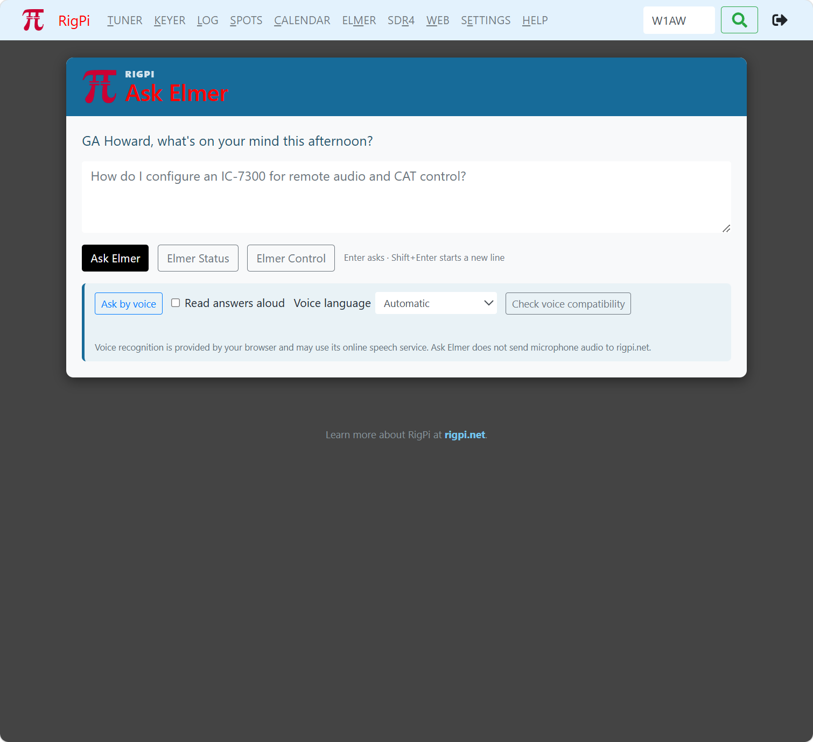
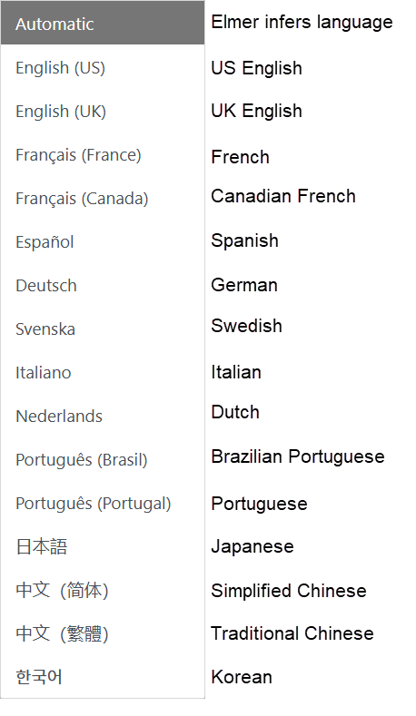
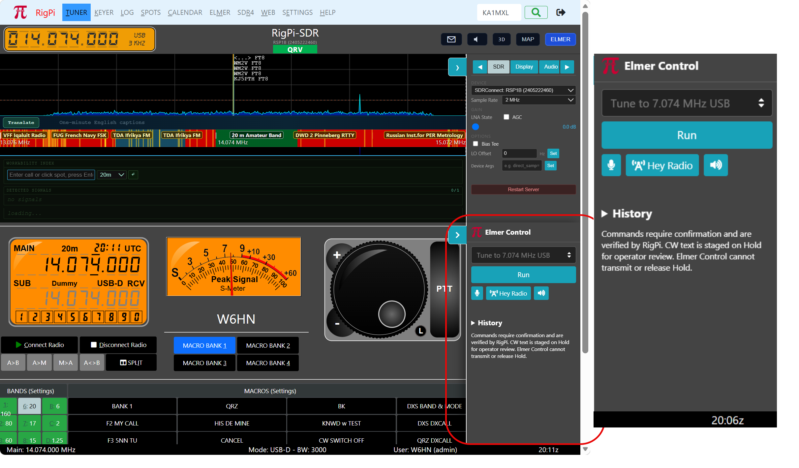

|
<< Click to Display Table of Contents >> Navigation: Settings > Elmer Ask, Voice and Control |
Set Up Ask Elmer, Elmer Voice and Elmer Control
Elmer adds three related capabilities to RigPi:
Feature |
Purpose |
Ask Elmer |
Answers RigPi and amateur-radio questions using Official Help, RigPi and Hamlib source material, Groups.io discussions and files, WSJT-X material, and approved live station data. |
Elmer Voice |
Accepts spoken questions and commands, reads answers aloud, and can provide live transcription and translation. |
Elmer Control |
Provides a compact command drawer in the Tuner and Keyer windows for safe radio, CW, macro, scanning, and recording actions. |
•An internet connection.
•A current RigPi release containing Elmer.
•A paired RigPi Elmer Service connection.
•For voice input, microphone permission and a secure HTTPS RigPi connection. A local secure browser context may also work.
No OpenAI setup is required. RigPi users do not need a ChatGPT subscription, OpenAI account, or personal API key. RigPi.net supplies the hosted service through the station's Elmer plan or beta allowance.
1.Sign in to RigPi with an administrator account.
2.Open Settings > Accounts > User Settings.
3.Locate RigPi Elmer Service and select Configure.
4.If the station is not connected, enter a recognizable station name.
5.Provide the displayed six-character approval code to the RigPi Elmer administrator. The code expires after a short time.
6.Leave the page open. RigPi checks automatically and displays Connected after approval.
Select View Usage to see the station plan, allowance, questions, tokens, response timing, and voluntary feedback totals. Usage is shared by the accounts on that physical RigPi.
Disconnect immediately revokes the protected station credential. Ask Elmer, hosted voice processing, and cloud command interpretation will stop until the station is paired again.

1.Open Help > Ask Elmer.
2.Enter a question in everyday language. Press Enter to ask; use Shift+Enter for a new line.
3.Elmer searches the RigPi knowledge collection and, when appropriate, station-local live services such as QRZ, the onboard FCC database, repeater data, or shortwave schedules.
4.Use Copy to copy the formatted answer. Links and approved images remain available in the displayed answer.
5.Rate the answer from 1 through 10 and optionally explain why. Submitted feedback helps improve RigPi.
Example questions include:
•How do I configure an IC-7300 for remote audio and CAT control?
•How do I set up remote CW keying?
•Show me a photograph and biography for W6HN
•Show K8AJS on a map
•Find all ham clubs within 40 miles of ZIP 44691
•Show all Extra-class hams within 10 miles of Wooster, Ohio
•What shortwave stations are broadcasting in Spanish now?
•What are the W8WOO repeater frequencies?
•Visa mig biografin för SM5VFE
References marked Official Help are the preferred source for current RigPi operation. Community posts and contributed files may describe older releases; Elmer identifies uncertainty and conflicting procedures when the evidence permits.
Browser recommendation: Use current Google Chrome for Elmer Voice. Safari may produce less reliable speech recognition or may not support every voice feature consistently. Voice also requires an HTTPS RigPi address and microphone permission for that site. Typed Ask Elmer and Elmer Control commands remain available when voice is unavailable.
1.Open Ask Elmer or the Elmer Control drawer and select the microphone control.
2.Allow microphone access when the browser asks. The permission belongs to the RigPi site and browser being used.
3.Speak normally. For hands-free radio commands, say Hey RigPi followed by the command.
4.Review any frequency or other safety-sensitive value that RigPi asks you to confirm.
5.Use the speaker control to enable or disable spoken playback.
Elmer can recognize supported languages, search using English source material, and answer in the speaker's language. Live captions can transcribe received audio and translate it to a selected language.

Here is a list of supported languages:
•English (US and UK)
•French (France and Canada)
•Spanish
•German
•Swedish
•Russian
•Ukrainian
•Italian
•Dutch
•Portuguese (Portugal and Brazil)
•Japanese
•Chinese (Simplified and Traditional)
•Korean
•Polish
•Czech
•Norwegian Bokmål
•Danish
•Finnish
Elmer Voice can be used in the Ask Elmer window, SETTINGS > Help > Ask Elmer. Elmer Voice also appears in the lower right corner of the Tuner and Keyer windows in the Elmer Control panel. use the > tab to hide or display Elmer Control.
Voice audio is sent to the hosted Elmer service only while recognition or live captions are active. Turn off the microphone or captions when they are not needed. Spoken playback normally uses the browser's speech system.

Open the Elmer Control drawer from the side tab in the main Tuner or Keyer window. Typed commands and spoken Hey RigPi commands use the same control path.
Examples include:
•Tune radio 1 to 14.025 MHz CW
•Set mode to CW and bandwidth to 500 Hz
•Restore the previous frequency and mode
•Set RF gain to 40 percent
•Set CW speed to 22 words per minute
•Put CQ CQ DE W6HN in the CW buffer
•Run macro CW BW 500 HZ from bank 2
•Scan shortwave broadcasts in Spanish and stop on a signal
•Sintoniza en FT8 en 20 metros
Use the up/down triangles or keyboard Up/Down arrows to recall previous commands. During a supported scan, Space stops on the current frequency; press Space again to resume.
Operator remains in control. Elmer uses allowlisted station actions, confirms sensitive changes, verifies results when possible, and does not treat ordinary text as permission to transmit. Check the selected radio, frequency, mode, bandwidth, power, antenna, and operating privileges before transmitting.
Symptom |
What to check |
Elmer reports that radio control is unavailable. |
Open the Tuner and connect the selected radio first. Confirm that normal RigPi tuning works, then repeat the command. |
The microphone is unavailable. |
Use HTTPS, check the browser's microphone permission for the RigPi site, reload the page, and select the microphone again. |
The wrong language is recognized. |
Check the voice-language selection. Automatic recognition usually works best when the command contains a complete phrase and a clearly spoken frequency. |
A spoken frequency is uncertain. |
Elmer should request confirmation. Cancel the change if the displayed frequency is not exactly what you intended, then type the command. |
The allowance is exhausted. |
Open View Usage. During the beta, contact the RigPi Elmer administrator; production plans and refills are managed through RigPi.net. |
References open the wrong page. |
Reload Ask Elmer and try the reference again. Official Help references resolve locally on the RigPi. |
•The station credential is stored on the RigPi and is never displayed in the browser.
•QRZ and HamQTH passwords remain on the RigPi. Only facts requested for an answer are sent to the hosted Elmer service.
•Station statistics contain operational totals; the station statistics page does not display question, answer, or feedback-comment text.
•Answer feedback is optional. The feedback notice explains what is submitted before it is sent.
The Elmer station credential is not restored from the RigPi user database backup. Sign in as administrator and pair RigPi Elmer Service again. Reconnect other external services whose protected credentials were not restored.
RigPi Help — Set Up Ask Elmer, Elmer Voice and Elmer Controle.